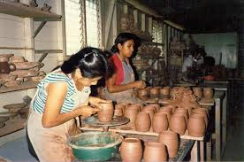

San Juan de Oriente está situado a 41 kilómetros de la capital Managua y forma parte de los llamados "Pueblos Blancos".
Es conocido a nivel nacional e internacional por la elabración artesanal de piezas de cerámica.
San Juan de Oriente o también conocido como San Juan de los Platos, ubicado en la cima de la Laguna de Apoyo, fué fundada por los españoles en
el año 1585, siendo uno de los municipios más antiguos del país. Su nombre original fué "Villa Namotiva" que significa en chorotea "pueblo
antiguo" o "hermano de sus vecinos"
Prácticamente en todas las casas de este pequeño municipio existe un taller de cerámica que de manera aresanal, preservando las técnicas tradicic
ionales de los antepasados y pasándolas de generación en generación, elaboran utensilios de cerámica de gran diversidad y alta calidad. Sin duda
alguna San juan de Oriente es un referente nacional en esta artesanía. Los modelos y estilos son diversos desde las piezas que reproducen la cerá
mica. Los modelos y estilos son diversos, des las piezas que reroducen la cerámica pre colombina, hasta modelos más modernos, panado por las piez
as Unitarias.
San Juand de Oriente celebra sus fiestas patronales el 23 de junio en honor a su patrón San Juan Bautista. Días cargados de tradición y activida
des que se viene celebrando de hace ya casi 400 años, como es el recorrido de las vacas, el juego de los chilillos, el baile de los chinegros y el
obsequio de comida por parte de los promesantes.
Del 15 al 17 se celebra La Feria de las Artesanias, donde varias calles principales del municipio sellenan de expositores de los artesanos mostra
ndo sus productos.